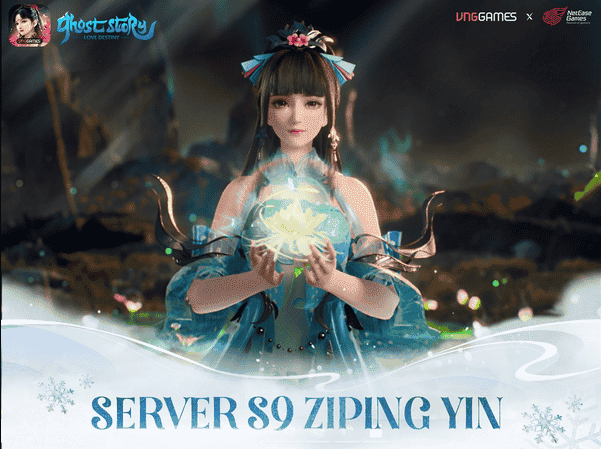

Ziping Yin: Kekuatan Mistis dan Peran Besarnya dalam Guild League Ranking di Ghost Story

Dalam dunia Ghost Story, permainan aksi RPG yang memadukan fantasi, petualangan, dan teka-teki, Ziping Yin merupakan salah satu karakter yang selalu berhasil mencuri perhatian pemain. Meskipun ia bukanlah karakter utama dalam cerita, peranannya yang penuh misteri dan intrik membuatnya jadi salah satu tokoh yang paling dicari oleh para pemain. Ziping Yin terlibat dalam banyak event penting, termasuk Guild League Ranking Competition, dan berkontribusi besar dalam jalannya cerita utama.
Artikel ini akan membahas lebih dalam tentang Ziping Yin, mulai dari latar belakang, kemampuan mistisnya, hingga perannya dalam berbagai event penting dalam Ghost Story. Kami juga akan menjelaskan apa yang membuat karakter ini begitu menarik, dan bagaimana ia berinteraksi dengan pemain serta mempengaruhi jalan cerita.
Siapa Sebenarnya Ziping Yin?
Asal Usul Ziping Yin
Ziping Yin adalah karakter yang sangat misterius dengan latar belakang yang tidak banyak diketahui. Berdasarkan lore dan potongan-potongan dialog yang bisa ditemukan di dalam permainan, ia dikenal sebagai seorang individu yang memiliki kekuatan mistis luar biasa. Ziping Yin merupakan bagian dari kelompok mystic, yang bertugas menjaga keseimbangan antara dunia fisik dan dunia gaib di dunia Ghost Story.
Berbeda dengan pahlawan tradisional, Ziping Yin lebih berperan sebagai sosok penjaga atau pengawas. Ia sering muncul untuk menguji atau memandu karakter utama, serta memanipulasi jalannya peristiwa besar dalam cerita. Dengan peranannya yang selalu penuh teka-teki, Ziping Yin tidak hanya berinteraksi dengan karakter utama, tetapi juga menjadi bagian penting dalam berbagai event besar yang ada di dalam permainan.
Kemampuan Mistis Ziping Yin
Apa yang membuat Ziping Yin begitu menarik adalah kekuatan mistis yang dimilikinya. Ia dikenal memiliki kemampuan untuk mempengaruhi waktu dan ruang, serta dapat berhubungan langsung dengan dunia gaib. Ini memberinya kekuatan untuk mengubah jalannya berbagai peristiwa dalam permainan, kadang memberi dampak positif, kadang negatif—tergantung bagaimana ia berinteraksi dengan pemain.
Kemampuan ini memungkinkan Ziping Yin untuk menciptakan situasi yang tak terduga, di mana keputusan atau tindakan pemain bisa langsung terpengaruh oleh kehadirannya. Inilah yang menjadikan karakter ini sangat kuat dan penuh kejutan, karena Ziping Yin bukanlah sekadar karakter pendukung biasa dalam permainan.
Ziping Yin dalam Event Guild League Ranking Competition
Salah satu momen terbesar di Ghost Story yang melibatkan Ziping Yin adalah Guild League Ranking Competition—event terbesar yang mempertemukan guild-guild dari seluruh dunia dalam sebuah kompetisi besar. Event ini memfokuskan para pemain untuk bertarung dalam pertempuran guild versus guild, dengan tujuan menjadi guild terkuat.
Sebagai Pengatur Kompetisi
Ziping Yin berperan penting dalam mengatur jalannya kompetisi ini. Sebagai pengawas, ia memberikan berbagai misi dan tantangan yang menguji bukan hanya kekuatan tempur para guild, tapi juga strategi, kerjasama tim, dan kemampuan dalam mengelola sumber daya. Dalam Guild League Ranking Season 9 (S9), Ziping Yin memperkenalkan berbagai tantangan unik yang memacu para guild untuk mencapai level keterampilan tertinggi mereka.
Twist dalam Kompetisi: Misi yang Menggugah
Pada Season 9, Ziping Yin membawa misi rahasia yang hanya bisa diakses oleh guild dengan kekuatan dan strategi terbaik. Misi ini tidak hanya menguji kemampuan anggota guild untuk bekerja sama, tetapi juga memberi mereka kesempatan untuk mendapatkan hadiah-hadiah legendaris dan item unik yang sangat menguntungkan.
Namun, salah satu karakteristik yang paling mengejutkan dari Ziping Yin adalah kemampuannya untuk mengubah aturan kompetisi di tengah jalan. Dengan mengubah sistem poin atau memodifikasi tantangan, ia menciptakan kejutan yang terus meningkatkan ketegangan dalam event tersebut. Keputusan-keputusan yang diambil Ziping Yin dapat merubah jalannya kompetisi, dan hal ini membuat para pemain harus selalu siap menghadapi segala kemungkinan.
Pengaruh dalam Menentukan Pemenang
Tidak hanya berperan sebagai pengatur, Ziping Yin juga memiliki pengaruh besar dalam menentukan siapa yang akan keluar sebagai pemenang. Sebagai contoh, Ziping Yin bisa memberi keuntungan pada guild yang berhasil memenuhi persyaratan tertentu, atau bahkan membalikkan keadaan untuk guild yang tampaknya kalah. Dengan cara ini, Ziping Yin menambah elemen kejutan dan ketegangan dalam kompetisi, menjadikannya lebih seru dan tak terduga.
Ziping Yin dalam Cerita Utama Ghost Story
Selain perannya di event kompetisi, Ziping Yin juga memainkan peran besar dalam cerita utama Ghost Story. Karena ia bukan bagian dari pihak mana pun, Ziping Yin berfungsi sebagai penguji dan pembimbing bagi para karakter utama yang ingin mengungkap misteri dunia yang mereka hadapi.
Sebagai Penguji dan Pembimbing
Ziping Yin sering muncul pada saat-saat penting dalam cerita untuk memberikan ujian atau tantangan kepada para pahlawan. Ujian ini tidak hanya tentang kekuatan fisik, tetapi juga tentang kemampuan untuk memilih keputusan moral yang sulit. Beberapa kali dalam permainan, Ziping Yin memberikan pilihan yang sangat sulit, yang pada akhirnya akan mempengaruhi jalannya cerita dan nasib dunia.
Sebagai pembimbing yang penuh teka-teki, Ziping Yin sering memberikan petunjuk yang terselubung dalam kata-katanya. Pemain yang cermat akan menemukan petunjuk-petunjuk tersembunyi ini, yang bisa membuka lebih banyak informasi tentang tujuan dan sifat asli dari karakter ini.
Hubungannya dengan Dunia Gaib
Hubungan Ziping Yin dengan dunia gaib sangat erat. Ia memiliki pengetahuan mendalam tentang dunia ini, bahkan lebih banyak dari yang diketahui oleh karakter lain. Dalam beberapa kesempatan, Ziping Yin akan mengarahkan pemain untuk menjelajahi dunia lain, menemukan relics atau artefak kuno yang memiliki kekuatan luar biasa.
Namun, meski banyak informasi berharga yang diberikan, Ziping Yin selalu menyembunyikan beberapa kebenaran penting untuk dirinya sendiri. Hal ini semakin menambah misteri yang melingkupi karakter ini, serta memperdalam cerita yang ada dalam permainan.
Konflik dengan Karakter Lain
Ziping Yin juga sering terlibat dalam berbagai konflik dengan karakter utama lainnya. Terkadang, ia bekerja sama dengan pahlawan utama, namun di lain waktu ia malah bertindak sebagai antagonis dengan agenda tersembunyi. Salah satu contoh adalah keterlibatannya dalam pertempuran melawan kekuatan gelap yang mengancam dunia. Di sini, Ziping Yin berperan sebagai pemimpin yang berusaha menjaga keseimbangan antara kebaikan dan kejahatan.
Namun, tindakan Ziping Yin sering kali tidak bisa dinilai dengan cara yang sederhana. Apakah ia benar-benar berusaha membantu karakter utama, ataukah ada tujuan tersembunyi di balik setiap langkah yang ia ambil?
Mengapa Ziping Yin Begitu Menarik bagi Pemain?
Karakter yang Ambigu
Ziping Yin memiliki karakter yang sangat ambigu, yang membuatnya begitu menarik bagi pemain. Ia tidak sepenuhnya pahlawan, dan tidak pula sepenuhnya jahat. Sebagai sosok yang sering memegang kendali atas situasi, sikap Ziping Yin bisa berubah-ubah, baik mendukung maupun menghalangi pemain. Ini menciptakan ketegangan yang terus mengalir sepanjang perjalanan permainan.
Hubungan dengan Dunia Gaib
Ziping Yin bukan hanya sekadar karakter yang ada dalam permainan. Ia juga menjadi penghubung antara pemain dengan dunia gaib yang penuh dengan misteri dan kekuatan tak terduga. Pemain merasa tertantang untuk menggali lebih dalam tentang dunia gaib, dan Ziping Yin adalah kunci utama yang membuka semua petualangan tersebut.
Pengaruh terhadap Jalannya Cerita
Karena Ziping Yin sering kali mempengaruhi jalannya cerita dengan cara yang tak terduga, ia memberi pemain pengalaman naratif yang berbeda setiap kali mereka bermain. Keputusan-keputusan yang diambil oleh Ziping Yin sering kali membawa kejutan, menambah ketegangan dalam cerita dan memberi pemain rasa terlibat langsung dalam dunia yang sedang berkembang.
Kesimpulan
Ziping Yin adalah salah satu karakter paling kompleks dan menarik di Ghost Story. Dengan kekuatan mistis yang luar biasa dan sifatnya yang ambigu, ia memegang peran yang sangat penting dalam berbagai event, terutama dalam Guild League Ranking Competition, serta turut menentukan jalannya cerita utama. Karakter ini bukan hanya berfungsi sebagai pengawas atau pembimbing, tetapi juga menjadi sosok yang memicu rasa penasaran dan ketegangan dalam setiap aspek permainan.
Dengan segala misteri yang menyelimutinya, Ziping Yin akan terus menjadi karakter yang tak terlupakan oleh para pemain di dunia Ghost Story. Jika kamu ingin terus melanjutkan petualanganmu di dunia Ghost Story, pastikan untuk Top Up Ghost Story di Topupgim dan dapatkan berbagai keuntungan dalam perjalanan epik kamu!